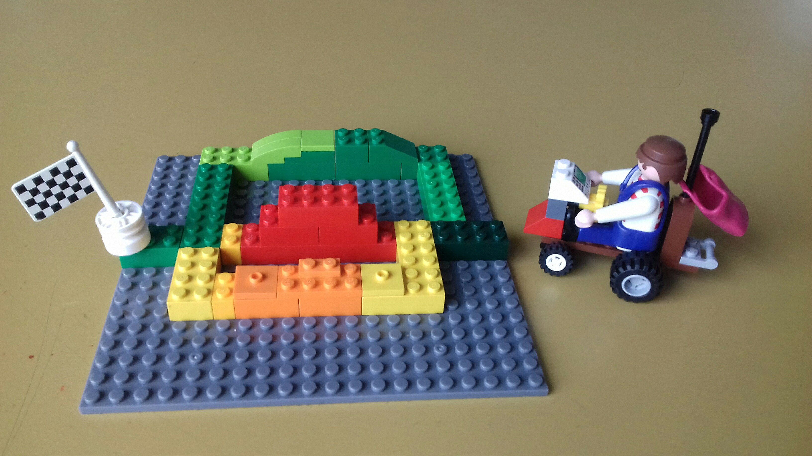

Navigation für Rollstuhlfahrer
- Wir schreiben eine Navigationsanwendung, die Hindernisse visualisiert.
- Du entscheidest welche Alternativroute für dich die beste ist.
- Die Anwendung lernt aus deinen Entscheidungen um bei künftigen Routenvorschlägen auf deine Bedürfnisse einzugehen.
Aktueller Stand
Von September 2019 bis Februar 2020 werden wir im Rahmen des Prototype Funds gefördert.
Wir haben gerade erst mit dem Projekt begonnen. Alle Entwicklungen findest du auf Github.
Berücksichtigung vorhandener Daten
Unsere Anwendung schlägt ÖPNV-Verbindungen vor, achtet dabei auf Barrierefreien Ein-/Ausstieg und welche Fahrstühle derzeit funktionieren.

"What a brillinat project"
That is what they all say about us
"I shouldn't have gone with their competitor."
 Nan Chief Fun Developer
Nan Chief Fun Developer
Das Konzept
Die Community um OpenStreetMap und Wheelmap pflegt eine umfangreiche Sammlung freier Daten über Barrierefreiheit, die für Rollstuhlfahrer und Lastenräder sehr nützlich sind.
Wir entwickeln eine Routingengine, die Navigation für kombinierte Nutzung von nichtmotorisiertem Individualverkehr und öffentlichen Verkehrsmitteln unterstützt.
Damit körperlich eingeschränkte Menschen effizient und selbstständig am Verkehr teilnehmen können, bemühen wir uns alle relevanten Informationen (z.B. Wegbeschaffenheit, Hindernisse, nicht funktionierende Fahrstühle, Ausfälle/Umleitungen im ÖPNV) zu berücksichtigen.
Indem mehrere alternative Routen vorgeschlagen und relevante Unterschiede ansprechend visualisiert werden, wird dazu beigetragen, dass selbstbestimmte, informierte Entscheidungen getroffen werden können. Individuelle Bedürfnisse von Fahrer und Fahrzeug sollen gleichermaßen flexibel und nutzerfreundlich angepasst werden können.
Die Berücksichtigung von Barrierefreiheit und der Bedarf an individuelleren Routingprofilen besteht auch für Lastenräder. Aus bestehenden Projekten existieren Beziehungen zu vielen regionalen Fahrradkurieren. In Zusammenarbeit mit diesen ist eine Weiterentwicklung nach dem Förderungszeitraum geplant. Durch geeignete freie Software wollen wir alternative Innenstadtlogistikkonzepte unterstützen. Mittelbar wollen wir zu Emissionseinsparungen von Fahrradlogistikern im Vergleich zu motorisierten Kurieren beitragen.
Read MoreCase Studies
Termine
Triff uns vor Ort
- 21.-23. September 2019 State of the Map
- 16.-17. November 2019 Accessibility Club Summit 2019 Berlin
- 26.-30. Dezember 2019 35C3
- Anfang März 2020 Prototypefund Demo Day
- Mitte März 2020 Chemnitzer Linux-Tage
Du erreichst uns auf Github oder per Mail.
Wo sonst?
Projektentwicklung & Milestones
Projektlog, builds, achievements
2007
- Satoshi Nakamoto began working on the Bitcoin concept.
2008
August
- Neal Kin, Vladimir Oksman, and Charles Bry file an application for an encryption patent application.
- Bitcoin.org was registered at anonymousspeech.com.
October
- Nakamoto describes the Bitcoin currency and solves the problem of double spending.
November
- The Bitcoin project is registered on SourceForge.net.
2009
January
- Block 0 is established.
- Version 0.1 of Bitcoin is released.
- The first Bitcoin transaction.
October
- An exchange rate is established.
December
- Version 0.2 is released.
- The difficulty increases.
2010
February
- The Bitcoin Market is established as a Bitcoin currency exchange.
- Encryption patent is published.
May
- The first real-world transaction using 10,000 BTC spent on pizza.
July
- Version 0.3 released.
- In five days, the price grew 1000%, rising from $0.008 to $0.08 for 1 bitcoin.
- The MtGox Bitcoin currency exchange market is established.
August
- Exploit generates 184 billion Bitcoins.
October
- Financial task force issues warning.
- The first public version of an OpenCL miner is released.
November
- Market cap exceeds $1 million USD.
December
- Bitcoind compiled for Nokia N900.
- First mobile Bitcoin transaction.
- Difficulty increases.
2011
January
- Silk Road opens for business.
- 25% of total Bitcoins generated.
February
- Bitcoin reaches parity with US dollar.
- WeUseCoins.com is created.
March
- Second largest decrease in difficulty.
- Britcoin opens for trading.
- Bitcoin Brasil opens.
April
- Bitcoin passes parity with Euro.
- Difficulty surpasses 100,000.
June
- Bitcoin Market drops PayPal.
- The largest percentage price decrease to-date became known as the Great Bubble of 2011. Top of bubble at $31.
- WikiLeaks starts accepting Bitcoin.
- Major breach of security at MtGox.
- Difficulty passes 1 million.
August
- Bitcoin Conference and World Expo in New York City, NY.
- P2Pool mines its first block.
- Back-to-back drop in difficulty.
September
- Casascius coins mint physical Bitcoins.
November
- Bitcoin & Future Technology European Conference in Prague, Czech Republic.
December
- $2 minimum price after the first price drop.
2012
September
- London 2012 Bitcoin Conference.
- Bitcoin Foundation begins.
December
- Slowly rising for a year. Price at $13.
2013
February
- Version 0.8 released.
- Bitcoin goes up to $30.
March
- Bitcoin spikes to $74.90.
- Market cap reaches $1 billion.
April
- Bitcoin surpasses $100.
- Price hits an all-time high of $266.
- Bitcoin Central is hacked.
May
- First Bitcoin ATM unveiled.
- Bitcoin Central gets hacked again.
October
- FBI shuts down Silk Road.
- Bitcoin price drops from $139 to $109.71 in less than three hours after Silk Road closure, recovers.
November
- Bitcoin price surges to a new all-time record of $1242.
December
- Price crashed to $600, rebounded to $1000, crashed again to the $500 range. Stabilized in between.
- China's Central Bank bans Bitcoin transactions.
- The network exceeded 10 petahash/sec.
2014
January
- Price spiked to $1000, then settled in the $800–$900range.
March
- Version 0.9 released.
June
- The network exceeded 100 petahash/sec.
December
- Microsoft began to accept bitcoin to buy Xbox games and Windows apps.
2015
February
- Version 0.10 released.
July
- Version 0.11 released.
November
- 2015 record high of $504.
2016
January
- Price at $1150 per bitcoin.
- Price fell 30% in a week, reaching a multi-month low of $750.
- The network exceeded 1 exahash/sec.
February
- Version 0.12 released.
April
- Steam started accepting bitcoin as payment.
August
- Version 0.13 released.
September
- There are 770 bitcoin ATMs worldwide.
2017
March
- Version 0.14 released.
- The price of 1 bitcoin surpassed the spot price of an ounce of gold for the first time.
- The number of GitHub projects related to bitcoin passed 10,000.
- Price traded above $1290.
April
- Japan Declares Bitcoin as Legel Tender
August
- Bitcoin "splits" into Bitcoin (BTC) and Bitcoin Cash (BCH)
November
- Bitcoin for the first time hit $10,000
2018
Today
- At the moment, one bitcoin cost: .